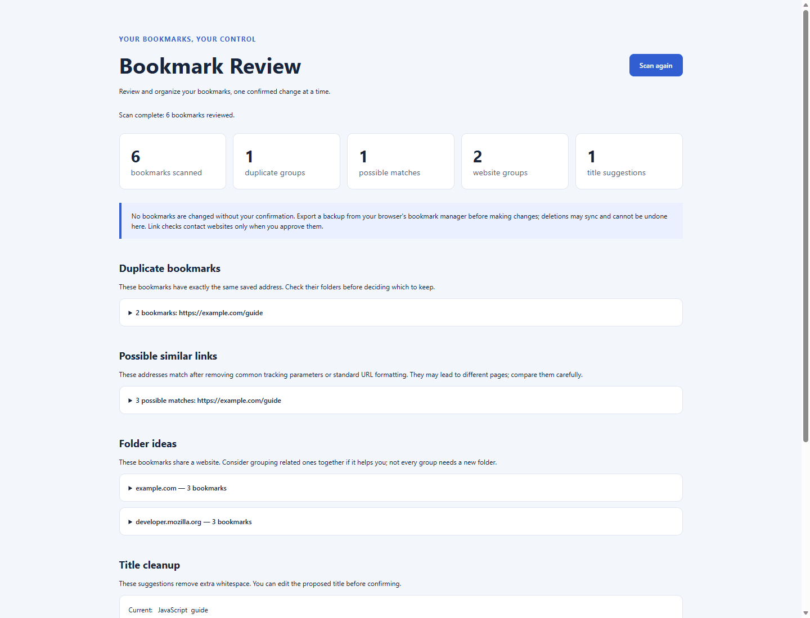
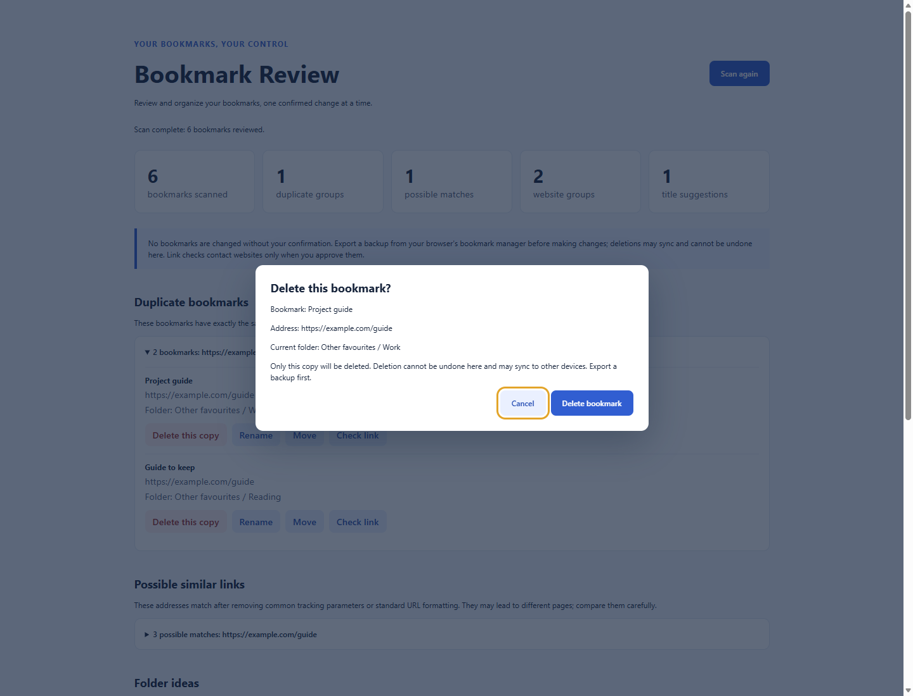

Bookmarks scanned
The number of individual saved links the extension read. Folders themselves are not counted.
A FRIENDLIER WAY TO TIDY YOUR BROWSER
An illustrated guide to installing, trying, and understanding Bookmark Review — no extension experience needed.
01 / THE BIG PICTURE
A browser extension is a small program that adds a feature to your browser. This one reads your bookmarks and suggests ways to organize them. You decide whether to make each change.
Yes. Creating a folder, moving, renaming, or deleting a bookmark each requires its own confirmation popup. Review the details and choose Cancel to leave things unchanged. The extension cannot undo a deletion.
Analysis happens on your device. A link check contacts its website only after you approve it; the site can see your IP address and the requested address.
The browser's bookmarks permission lets the extension read and change bookmarks. A link check may also request access to the selected website.
02 / GET STARTED
This is an unpacked development version, not a store download. Keep the project folder on your computer; Chrome reads the extension from there.
In Chrome's address bar, type chrome://extensions and press Enter.
Find the switch near the top of the page and turn it on. This allows you to load a local extension.
Select the project folder — the one containing manifest.json — and confirm.
Click the puzzle-piece Extensions button in Chrome's toolbar, then click Bookmark Review. A report opens in a new tab and scans automatically.
Return to chrome://extensions, click the reload icon on the extension's card, and open the report again. The Scan again button refreshes bookmarks; it does not reload changed code.
Chrome and Brave still need hands-on testing. A basic scan has been tested in an isolated Edge profile. This project is not yet published.
03 / READ THE REPORT
The images below show the real interface with fictional test bookmarks, not your personal data. Your numbers and folder names will be different.
The number of individual saved links the extension read. Folders themselves are not counted.
A group contains two or more bookmarks with exactly the same saved address. Different addresses are not considered duplicates, even if they look similar.
Addresses that match after removing common tracking parameters or standard URL formatting. They can still be different pages; inspect them carefully.
Two or more web links with the same website name, such as example.com. This is a folder idea, not a command; the links may already be organized.
Titles with extra whitespace are shown with a cleaner version. You can edit the proposed title; the extension does not invent one or use AI.
Click a duplicate, possible match, or website group to expand it. Each row shows its title, address, current folder, and available actions. Click the group again to collapse it.

Export a backup from your browser's bookmark manager first. If browser sync is on, a change may also affect your other devices. Check the address and folder carefully; the extension cannot undo deletions.
To export a backup in Chrome: open chrome://bookmarks/, choose the bookmark manager's three-dot menu, select Export bookmarks, and save the file somewhere private. It contains your bookmark data. The extension does not create or restore backups for you.
The extension never selects a duplicate to delete for you. Every folder creation, move, rename, and deletion needs a separate confirmation.

Expand a duplicate or possible match, click Delete this copy, check the title, address, and folder, then cancel or confirm. Other copies are not selected automatically.
Expand a website group and choose Create suggested folder. Enter a name, choose its parent folder, and confirm. The folder starts empty. For each bookmark, choose Move, select the destination, and confirm separately.
Choose Review rename for a title suggestion, or Rename beside a bookmark. Review the current title and edit the new title in the popup, then confirm.
Use Find a bookmark (at least two characters), or expand a group, and choose Check link. Confirm the network request and, if asked, grant website access in the browser. The check uses a HEAD request without cookies, does not follow redirects, and times out after 10 seconds. A failure, redirect, or HTTP error does not prove a link is broken.
Website access granted for a check remains until removed in the browser's extension settings. The check sends the address, including any query, to the website; only HTTP and HTTPS links without embedded credentials can be checked.
04 / TRY IT YOURSELF
You can test with bookmarks you already have, or create temporary ones in your browser's bookmark manager. The example addresses below are fictional placeholders; you do not need to visit them.
Create a folder called Bookmark Review Test in your bookmark manager. Add the examples there, then delete only that test folder yourself when you are finished. If sync is enabled, those test bookmarks may sync to other devices.
| Test | What to set up | What you should see |
|---|---|---|
| Duplicate | Save https://example.com/guide twice with different titles. | One duplicate group with two rows; expand it to see both titles and folders. |
| Not a duplicate | Also save https://example.com/guide/ with the trailing slash. | It is not included in the exact-match duplicate group. It can still appear in the website group. |
| Possible match | Also save https://example.com/guide?utm_source=test. | It appears with the original under Possible similar links. Compare before deciding whether to delete. |
| Folder idea | Expand the example.com group and choose Create suggested folder. | The folder is created only after you choose a destination and confirm; it starts empty. |
| Title cleanup | Save a title with repeated spaces, such as My guide, then choose Review rename. | The popup suggests My guide. Cancel leaves the title unchanged; confirm applies the shown title. |
| Move and delete | Choose Move or Delete this copy for a test bookmark. | Cancel first and verify nothing changed. Repeat and confirm; only the selected bookmark changes. |
| Link check | Choose Check link for a test bookmark; cancel the popup. | No website request is made. If you later confirm and grant access, check the reported result manually. |
| Refresh | Add or remove a test bookmark in the browser, then click Scan again. | The counts and suggestions update to reflect the current bookmarks. |
For automated checks, run node --test in the project folder. These tests are separate from the manual browser checks above.
05 / GET HELP
Check that it is enabled on chrome://extensions, then look under the toolbar's puzzle-piece button. If it is not listed, repeat the “Load unpacked” steps.
Read the error shown on the page and click Scan again. If it persists, reload the extension on the extensions page, reopen it, and share the error message when asking for help.
There may be no matches for that particular rule. For example, two similar but different URLs are not exact duplicates. The test plan above gives you a known example.
There is no undo in the extension. Recovery depends on your browser and your backup. Export a backup before cleanup, and review each confirmation carefully.
If a bookmark or destination changed after the scan, the extension asks you to cancel and scan again instead of applying an outdated change. Managed bookmarks may not be editable.